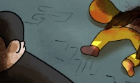
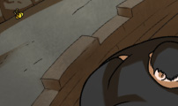
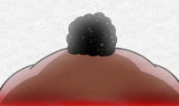
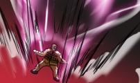
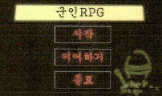
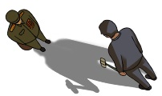
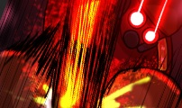
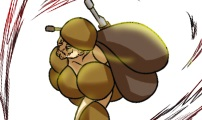
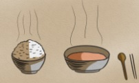
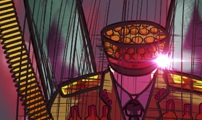

| 이미지 | 제목 | 별점 | 등록일 |
|---|---|---|---|
| 시즌2 20화 전역 | 9.91 | 2017.09.23 | |
| 시즌2 19화 귀국 | 9.95 | 2017.09.16 | |
|  | 시즌2 18화 동상이몽 | 9.91 | 2017.09.09 |
| 시즌2 17화 혈통의 비밀 | 9.92 | 2017.09.02 | |
| 시즌2 16화 은하10호 | 9.91 | 2017.08.26 | |
| 시즌2 15화 결전 | 9.90 | 2017.08.19 | |
| 시즌2 14화 각성 | 9.91 | 2017.08.12 | |
|  | 시즌2 13화 숨겨진 형제들 | 9.92 | 2017.08.05 |
| 시즌2 12화 도약 | 9.92 | 2017.07.29 | |
| 시즌2 11화 입장 | 9.93 | 2017.07.22 | |
| 시즌2 10화 결단 | 9.94 | 2017.07.15 | |
| 시즌2 9화 재회 | 9.91 | 2017.07.08 | |
|  | 시즌2 8화 모성애 | 9.91 | 2017.07.01 |
| 시즌2 7화 진격 | 9.84 | 2017.06.24 | |
| 시즌2 6화 전쟁 | 9.89 | 2017.06.17 | |
|  | 시즌2 5화 쾌감 | 9.92 | 2017.06.10 |
| 시즌2 4화 예외처리 | 9.88 | 2017.06.03 | |
| 시즌2 3화 고통을 즐기는 자 | 9.88 | 2017.05.27 | |
| 시즌2 2화 북한 최고의 또라이 | 9.92 | 2017.05.20 | |
| 시즌2 1화 일당백만 | 9.93 | 2017.05.13 | |
|  | 특별편 | 9.91 | 2017.05.06 |
| 20화 진급 | 9.90 | 2017.04.29 | |
| 19화 통신 | 9.92 | 2017.04.22 | |
|  | 18화 또 다른 탈남 | 9.91 | 2017.04.15 |
| 17화 경각심 | 9.94 | 2017.04.08 | |
| 16화 해제 | 9.90 | 2017.04.01 | |
|  | 15화 MOPP | 9.88 | 2017.03.25 |
| 14화 완전통제구역 | 9.92 | 2017.03.18 | |
| 13화 돌연 | 9.88 | 2017.03.11 | |
|  | 12화 필사즉꿀 | 9.86 | 2017.03.04 |
|  | 11화 저녁을 위해서 | 9.95 | 2017.02.25 |
 |
10화 오아지탄광 | 9.82 | 2017.02.18 |
| 9화 재정비 | 9.87 | 2017.02.11 | |
| 8화 격침 | 9.75 | 2017.02.04 | |
|  | 7화 정체 | 9.71 | 2017.01.28 |
| 6화 대면 | 9.74 | 2017.01.21 | |
| 5화 격돌 | 9.73 | 2017.01.14 | |
| 4화 동지 | 9.74 | 2017.01.07 | |
| 3화 호화별장 | 9.66 | 2016.12.31 | |
| 2화 맨몸의 박이병 | 9.55 | 2016.12.24 | |
| 1화 탈남 | 9.33 | 2016.12.17 |